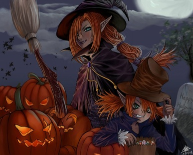

Descubra historias,tradiçãoes e curiosidade sobre a noite mais assustadora do ano
Ver históriaEntre no mundo sombrio dos vampiros e Descubra criaturas e histórias da noite
Entrar no mundo
Conheça lendas misterioas, historias assustadoras e os mistérios que cercam as bruxas.
Descobrir lendasO Halloween (Dia das Bruxas) é comemorado no dia 31 de outubro e é muito popular nos países anglo-saxões (países da América do Norte, que tem o inglês como principal idioma).
Diversos países do mundo celebram esta data com festividade e brincadeiras, onde crianças e adultos se fantasiam de monstros e saem às ruas em diversão. Nos Estados Unidos por exemplo, esta cultura é muito mais aproveitada e significativa para a população. A data é considerada feriado nacional e a maioria das pessoas entram totalmente no clima, se caracterizando com roupas e acessórios, decorando casas e jardins, além da tradição de crianças pedirem doces pela vizinhança.
De acordo com dados históricos, a origem do Halloween vem de antigos festivais celtas que iniciaram por volta do século V a.C. A festa que acontecia anualmente era chamada de Samhaim, marcando a passagem de ano e a chegada de inverno. As comemorações iniciavam em 31 de outubro e duravam três dias. Para os celtas, esta época significava a aproximação do mundo real entre o “outro mundo”, onde vivem os mortos. Eles acreditavam que os mortos retornavam para visitar suas casas, amaldiçoar seus animais e suas colheitas. Os símbolos que atualmente são utilizados no Halloween, eram confeccionados pelos celtas para afastar os maus espíritos. A tradição dos símbolos e das cores iniciada pelos celtas e seguida até os dias atuais : o Halloween é ligado principalmente às cores laranja e preto, pois o festival de Samhaim acontecia no início de outono, onde as folhas ficavam laranja e os dias mais escuros; os celtas inseriam velas em nabos ocos para afastar os maus espíritos, e com o passar dos anos, os americanos foram substituindo por abóboras grandes com caretas esculpidas; as máscaras e as fantasias também eram utilizadas pelos povos, pois achavam que assim os espíritos não os reconheceriam como humanos; os festivais de Samhaim eram utilizadas grandes fogueiras, o que acabava atraindo muitos morcegos, por isso o morcego também faz parte da simbologia; o esqueleto era uma das formas que eles pensavam que os mortos podiam aparecer; entre outros objetos. Na Idade Média (séculos V e XV), a festa passou a se chamar Dia das Bruxas pela Igreja Católica, que considerava a comemoração um ato de heresia (anticristão). As pessoas que festejassem tal data eram perseguidas e condenadas às fogueiras pelo Tribunal da Inquisição. Para diminuir as influências consideradas pagãs, a Igreja instituiu o “Dia de Finados” 2 de novembro. O Papa Gregório III alterou o “Dia de Todos os Santos” de 13 de maio para 1º de novembro, com o objetivo de cristianizar a festa pagã Samhaim. Como a data antecedia a festa de Samhaim, a mesma passou a se chamar “All Hallow’s Eve”, que significa véspera de Todos os Santos. Com o passar dos anos, o termo “All Hallow’s Eve” foi modificado para Halloween. Por influência da Igreja Católica, a figura da bruxa e seus artefatos, como vassoura e gato preto, também fazem parte do contexto e da tradição do Halloween. A origem de “Doces ou Travessuras” (em inglês Trick ou Treat) veio da Irlanda em 1910. Segundo a lenda, um homem conduzia uma procissão para arrecadar oferendas de agricultores, informando-lhes que o propósito era que suas colheitas não fossem amaldiçoadas por demônios. Na verdade, uma chantagem para conseguir os alimentos, dando origem ao Doces ou Travessuras no Halloween. No Brasil, a data também é celebrada em 31 de outubro, no entanto, não possui o mesmo valor cultural de outros países. A data é marcada geralmente por comemorações em Escolas ou festas à fantasia.
Contos Populares e Lendas de Terror
A Lenda da Alamoa: No folclore brasileiro, uma mulher alta e loira aparece em noites de lua cheia em Fernando de Noronha, atraindo homens para um abismo com sua beleza antes de se transformar em uma caveira.Cheonyeogwisin): Uma lenda asiática sobre o espírito vingativo de uma noiva que vaga por estradas e locais abandonados à espera de vítimas.